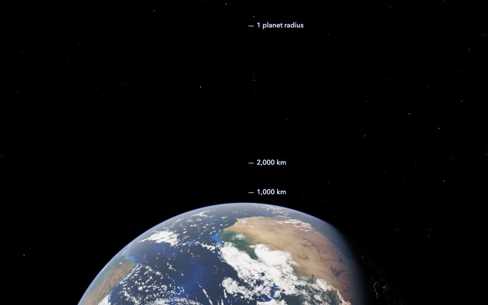
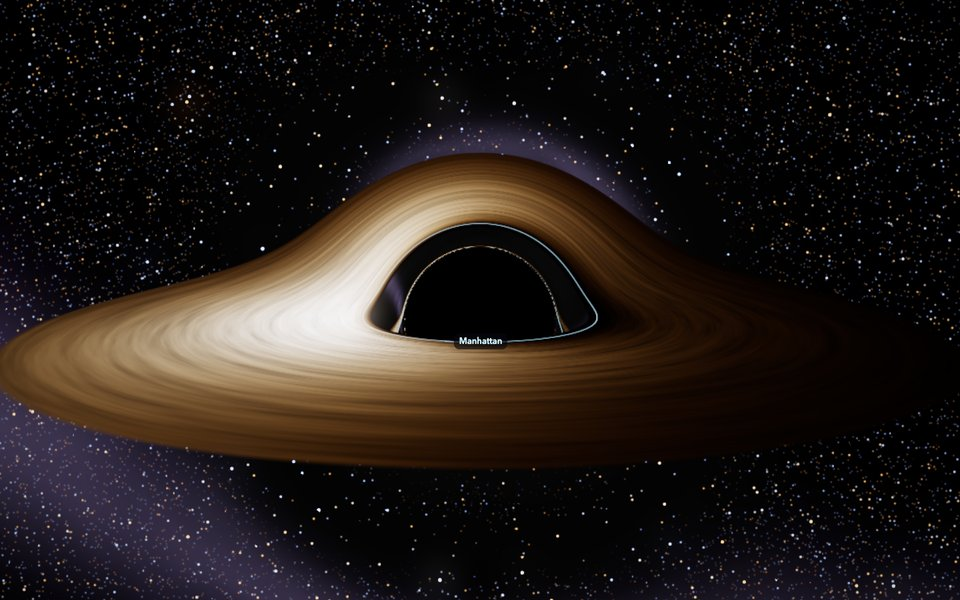
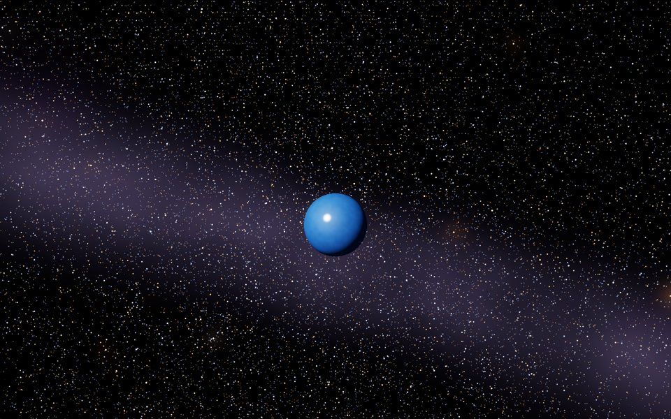
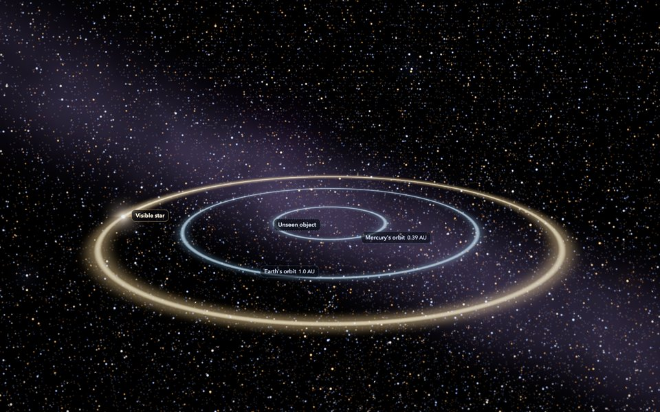
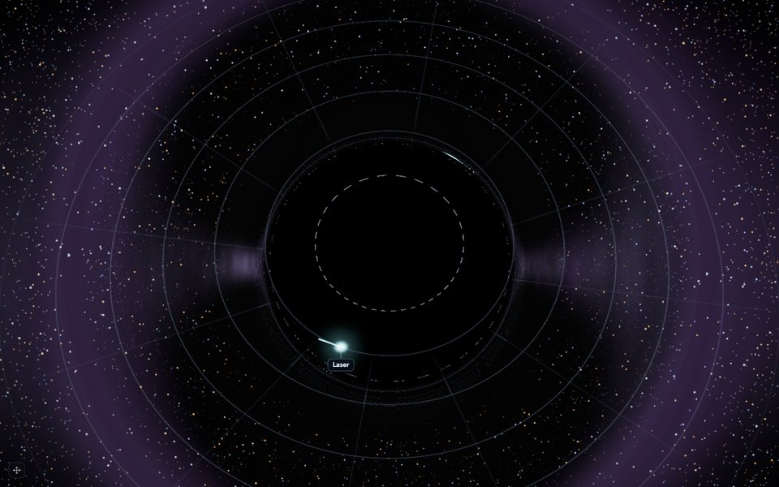
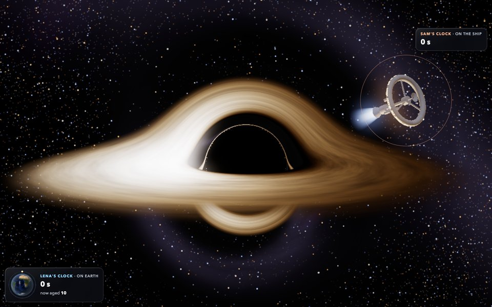
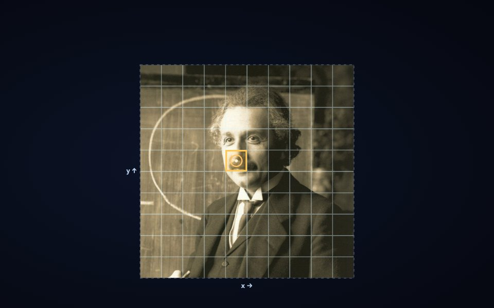
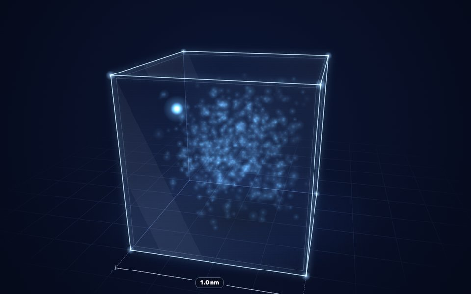

SimulationEscape Velocity
Launch a ball straight up from a planet and find the speed at which it never comes back. Discover that escape speed grows as the square root of the mass.
Open simulation →
SimulationGrow the Black Hole
Set a black hole's mass and watch its average density fall as it grows, until a big enough black hole is thinner than air.
Open simulation →
SimulationMake a Black Hole From Anything
Pile up any material until it collapses. The log reads each black hole's density against its size, from neutron-star matter down to hydrogen.
Open simulation →
SimulationWeigh the Invisible
Weigh an unseen companion from a star's speed and orbit size, and find when only a black hole can explain it.
Open simulation →
SimulationPut Light in Orbit
Fire light sideways near a black hole. Inside 1.5 Rs it spirals in, outside it spirals away: the photon orbit is unstable.
Open simulation →
SimulationTwo Clocks
Lower a hovering clock toward the event horizon and compare it with a clock far away: time runs slower and slower.
Open simulation →
SimulationWarped Space
Pull Einstein's portrait out of shape and watch the metric change. Then set the metric yourself and watch the picture.
Open simulation →
SimulationQuantum Claustrophobia
Squeeze an electron into a smaller and smaller box. Its motion grows until there is enough energy to make new particles.
Open simulation →